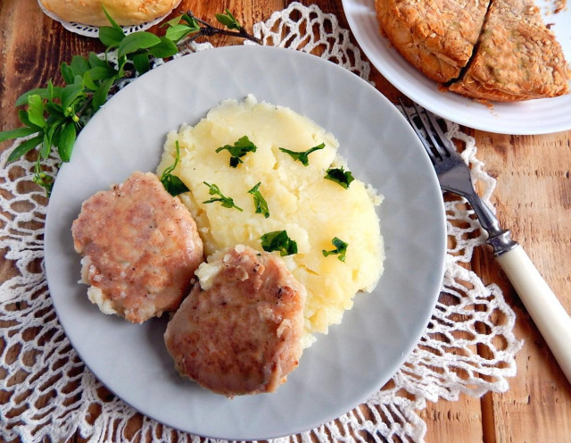

ООО "Русский дар" 
Вернутся в начальный раздел | Вернутся на главную страницу
| Ингредиенты для котлет: | Ингредиенты для гарнира: |
|---|---|
|
|
Оборудование: нож, миска, кастрюля, сковородка, плита, мясорубка и ложка столовая.

В качестве гарнира будем готовить картофельное пюре. Котлеты можно приготовить из любого мяса по вкусу, но вкуснее из смеси свинины и говядины. Начнем с приготовления картофельного пюре. Картофель моем, чистим и нарезаем крупными кусочками произвольной формы.

Кладем картофель в кастрюлю, промываем, чтобы смыть лишний крахмал, заливаем холодной чистой водой. Ставим на огонь. Когда вода закипит, убавляем огонь до среднего, добавляем щепотку соли и варим в около 25 минут, до мягкости картофеля. Готовность можно проверить вилкой или ножом.

Пока картофель варится, сделаем котлеты. Свежее мясо свинины и говядины тщательно промываем, просушиваем бумажными полотенцами, нарезаем на маленькие кусочки и прокручиваем мясо на мясорубке. В миску крошим белый хлеб, заливаем молоком и даем ему разбухнуть, оставляем на 15 минут.

В миску с хлебом кладем мясной фарш.

Репчатый лук чистим и мелко рубим ножом. Отправляем в миску с мясным фаршем. Добавляем соль и черный молотый перец по вкусу. Вбиваем куриное яйцо.

Тщательно перемешиваем массу, чтобы она стала однородной по консистенции. Фарш для котлет готов.

Картофель сварился. Часть воды, в котором варился картофель, сливаем. Картофель с остатками бульона разминаем ручной толкушкой или блендером до состояния пюре, однородного по консистенции. Добавляем в пюре сливочное масло и соль по вкусу, перемешиваем. Картофельное пюре готово.

В тарелочку насыпаем пшеничную муку, ее можно заменить панировочными сухарями. Смоченными в холодной воде руками формируем из фарша небольшие котлеты, каждую из них обваливаем в муке со всех сторон. На сковороду наливаем растительное масло. Разогреваем его. На масло кладем приготовленные котлеты. Жарим их в течение 3 минут с одной стороны, до румяности.

Затем переворачиваем и жарим с другой стороны до румяности.

Вливаем в сковороду немного воды, чтобы она закрывала котлеты не выше середины. Закрываем сковороду крышкой, огонь убавляем до медленного и томим котлеты в течение 25 минут, пока жидкость полностью не выпарится. Снимаем крышку, даем котлетам подсохнуть. Снимаем котлеты со сковороды и подаем с горячим картофельным пюре на гарнир к столу. Приятного аппетита!

Шаг 1, Шаг 2, Шаг 3, Шаг 4, Шаг 5, Шаг 6, Шаг 7, Шаг 8, Шаг 9, Шаг 10.